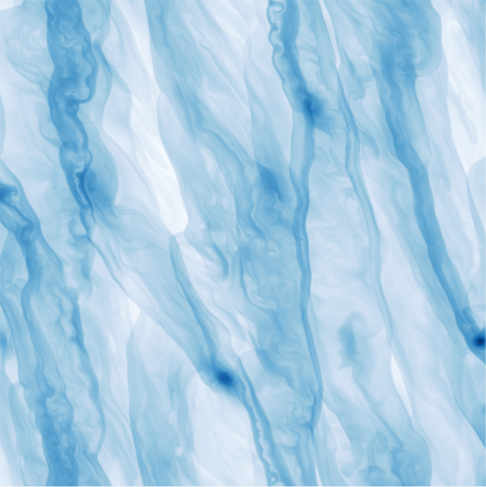
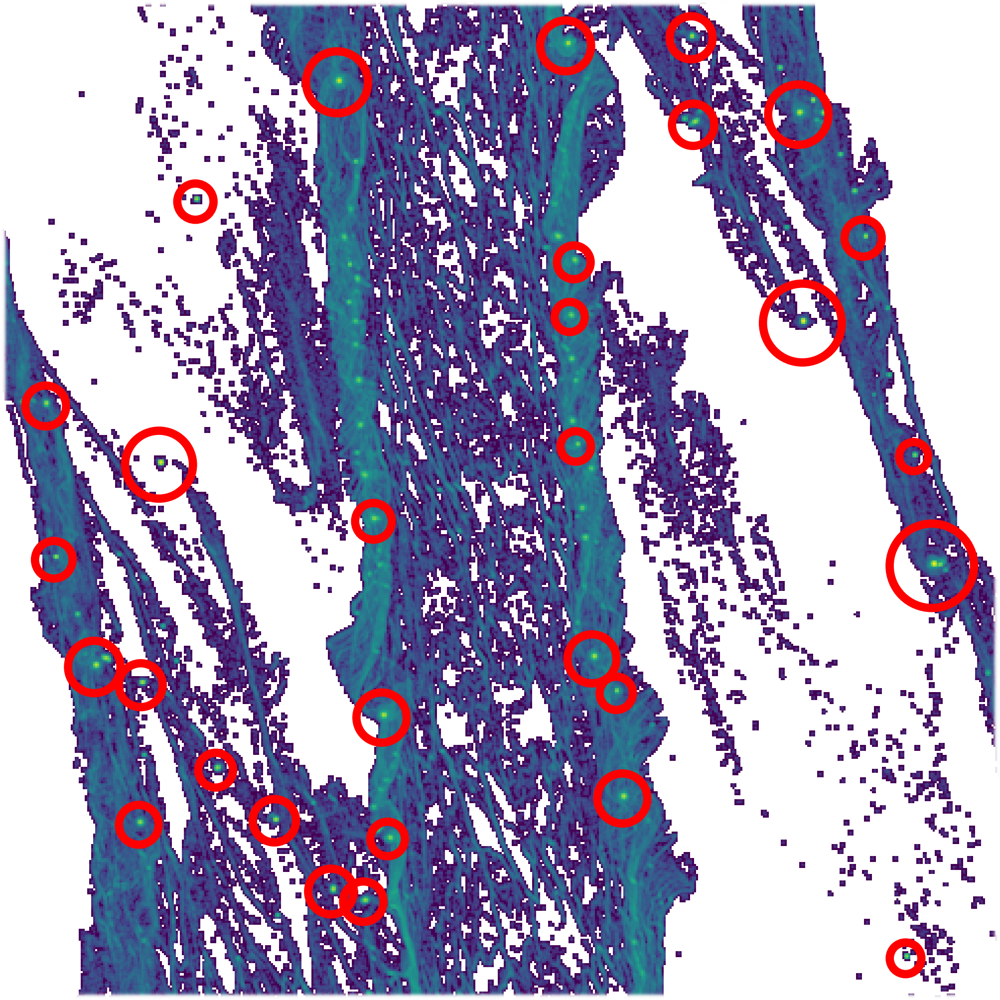
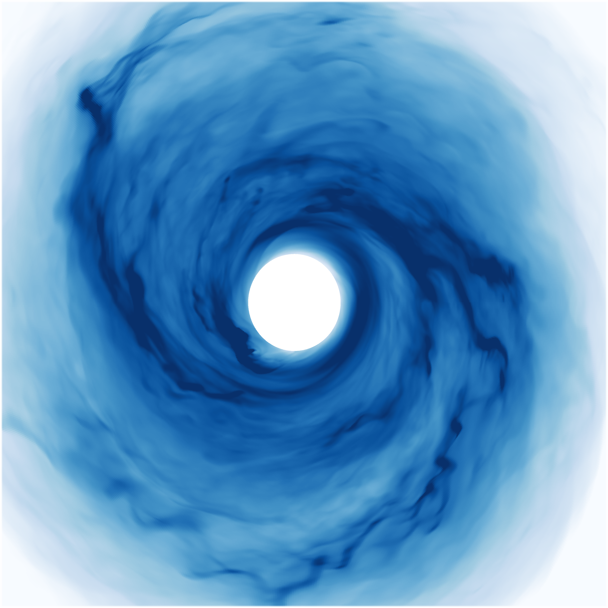

Research
|

  |
Circumstellar Accretion DisksDisk evolution is a pivotal topic in astrophysics due to the necessity of something as simple as efficient angular momentum transport. If this transport mechanism can be described sufficiently, it would help explain disk lifetimes, planet formation and evolution, among other important topics. Early in the disk lifetime this would be dominated by gravitational instabilities, capable of generating strong mass accretion due to significant gas overdensities. The thin dust disks observed in many young disks belies the strong accretion that might exist to explain their rapid evolution and short lifetimes. Since gravitoturbulence has been shown to produce turbulence that diffuses preferentially in the radial direction and gas self-gravity can significantly depress the thickness of the dust, self-gravitation may be an important part of understanding disk evolution and observations. Gravitational InstabilitiesRecent discoveries of young circumstellar disks (Elias 2-27) and potentially even disk fragmentation (L1448 IRS3B) suggest that self-gravitating disks are an important stage of star and planet formation. Once formed fragments may rapidly migrate, leading to growth, metal enrichment or destruction. To model self-gravitating disks and the dust dynamics therein, I use finite difference hydrodynamic simulation codes, like PENCIL, PLUTO and Athena++, to model local and global effects relating to gravitational instabilities. Planet and Star FormationThe discovery of large gas giant planets with large orbital distances, such as those around HR 8799, suggests that some planets may not be formed by core accretion. Gravitational instability has the potential to explain the existence of these planets while not competing with core accretion at closer radii. Expected masses can easily reach into the brown dwarf or even low-mass star range and thus gravitational instabilities may also result in binary companions with separations on the order of 100 au. For more details, including a collection of images and movies, click here or on the "Research" header above to the left. |
{kind=link}
{kind=link}
{kind=link}
{kind=link}
About Me

|
I am originally from Salt Lake City, completing my bachelor education in math and physics at the University of Utah in 2012. I continued studying physics at the Ruprecht-Karls University in Heidelberg, earning a masters degree in spring 2015. From September 2015 to September 2019, I was a doctoral student in the theory of planet and star formation group at the MPIA in Heidelberg before moving to UNLV and then University of Georgia, Athens for postdoctoral positions. I am currently again a postdoc at MPIA. For a more detailed history, see here for my CV. |
Links
Scientific links:My publications: on ADS, Google scholar, or ORCID
You can also find me on Github
My favorite codes to use:
The PENCIL code
PLUTO code
Athena ++
Phantom SPH
Useful links:
Wengen4 test
Other things I like:
Backcountry skiing
{kind=link}
Cycling
Futurama
falstad.com: Java applets that demonstrate basic math and physics concepts
Fantastic scientifically-motivated and often animated graphics
History and mythology of ancient Mesopotamia
Things to think about:
Life out of balance?
Consumption and identity (original video)
Path of least resistance
We accept the reality with which we are presented
A human crisis
What is art?